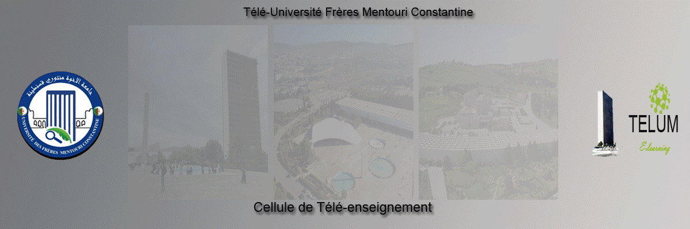

contenu
pied de page
Attention, votre navigateur ne supporte pas le javascript ou celui-ci a été désactivé. Certaines fonctionnalités de ce module sont restreintes.
Atelier2 : Conception d'un cours pour un enseignement hybride
Contenu :

Atelier2 : Conception d'un cours pour un enseignement hybride
Dr. A. BELHANI : Université frères Mentouri Constantine
Version 4.1
Février 2018
Commencer le module
Accueil
|
|